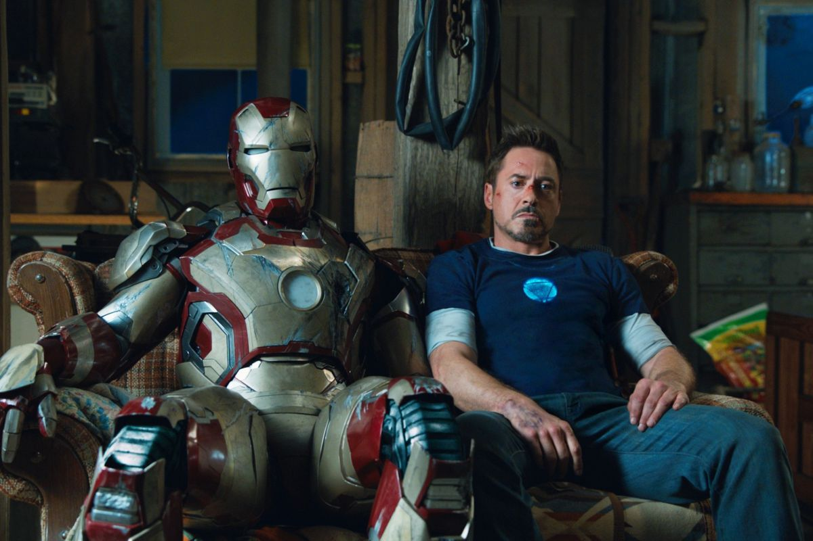
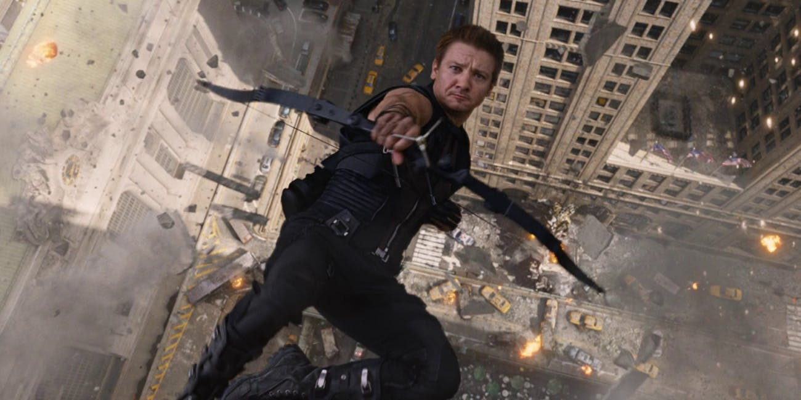

Marvel Charaktere
Wie gut kennst du die Marvel-Helden wirklich? Verschaff dir hier nochmal einen kleinen Überblick zu den wichtigsten Personen, bevor du das Wissens-Quiz machst ;)
| Name: | Steve Rogers |
| Aliases: | America's Ass, Captain, Capsicle |
| Spezies: | Mensch (US-Amerikaner) |
| Merkmale: | Muskelbepackt, meist perfekt sitzende Haare |
| Fähigkeiten: | Stärke, Schnelligkeit, Reflexe & Ausdauer, beschleunigte Selbstheilung, erfahrener & trainierter Kämpfer, Akrobat, Vibranium-Schild |
| Fun Fact: | Durch seinen beschleunigten Stoffwechsel hat Alkohol keine Wirkung mehr auf ihn. Er wird von seinem Körper schneller wieder abgebaut, als er trinken kann. |

| Name: | Anthony Edward "Tony" Stark |
| Aliases: | Iron Man, sonst Keine. |
| Spezies: | Mensch |
| Merkmale: | Genie, Billionär, Playboy, Leiter von Stark Industries, elektromagnetisches Implantat in der Brust was ihn am Leben hält. |
| Fähigkeiten: | Stark: Intelligenz, Kampfkünstler / Anzug: Fliegen, übermäßige Stärke, künstliche Intelligenz, unzählige Waffen |
| Fun Fact: | Tony selbst hat keine Spitznamen, er ist aber dafür bekannt selbst welche zu verteilen: "Point Break" und "Lebowski" für Thor, "Capsicle" für Captain America, "Build-A-Bear" für Rocket, "Squidwar (Thaddäus)" für Ebony Maw, "LEGOLAS" für Hawkeye etc. |
| Name: | Thor Odinson |
| Aliases: | God of Thunder, Son of Odin, Protector of Earth, King of Asgard, Prince of Thunder, Lord of Thunder, King Thor |
| Spezies: | Asgardianer |
| Merkmale: | Bestechende Attraktivität, blondes (meist langes) Haar, Muskelbepackter Körper (zumindest meistens) |
| Fähigkeiten: | Supermenschliche Stärke, Speed, Verletzungsresistenz, Hammer "Mjölnir", Erzeugen von Donner und Blitz. |
| Fun Fact: | Stan Lee spielt bei seinem Cameo-Auftritt in "Thor: Ragnarok" den Friseur auf Sakaar, der Thor die langen Haare abschneidet. |

| Name: | Robert Bruce Banner, M.D., Ph.D. |
| Aliases: | The incredile Hulk, Green Guy, Big Green Dude, Gringo, Mr. Green, Freak Accident, Big Guy |
| Spezies: | Mensch (mit Superkräften) |
| Merkmale: | Grün, Groß, Breit |
| Fähigkeiten: | Durch Gammastrahlung übermenschliche Stärke, Sprungkraft, Hulk Smash (Erschütterung durch Händezusammenschlagen), Widerstandskraft und schnelle Heilungskräfte, Intelligenz. |
| Fun Fact: | Hulk verdankt seine grüne Farbe einem Druckfehler. Laut den Zeichnern sollte er ursprünglich grau sein. |
| Name: | Peter Benjamin Parker |
| Aliases: | Spiderling, Spider Boy, Spider Guy, Crime-Fighting-Spider, Night Monkey |
| Spezies: | Mensch (Mutant) |
| Merkmale: | Jung, Laut, Aufgeregt |
| Fähigkeiten: | Übermenschliche Stärke (proportionale Stärke einer Spinne), Geschwindigkeit, Widerstandsfähigkeit, Beweglichkeit, sowie verbesserte Sinne, Spinnenetze schießen, "Wand krabbeln", intelligenter Anzug (Karen) |
| Fun Fact: | Die Rechte an Spider-Man liegen bei Sony Pictures. Spider-Mans Auftritt im MCU ist nur durch einen Deal zwischen Sony und Marvel möglich gemacht worden. |

| Name: | Clinton Francis Barton |
| Aliases: | The Hawk, Arrow Guy, Legolas, Watchdog |
| Spezies: | Mensch |
| Merkmale: | Immer mit Pfeil und Bogen auf dem Rücken unterwegs |
| Fähigkeiten: | Erfahrener Bogenschütze und militärisch ausgebildeter Kämpfer, Akrobat, außergewöhnliche Ausdauer, Taktiker, Besitz von spezialisierten Waffen |
| Fun Fact: | In "Captain America: Der Wintersoldat" und "Avengers: Endgame" trug Natasha Romanoff eine Halskette mit einem Pfeilanhänger als Symbol für ihre Freundschaft mit Barton. |
| Name: | Dr. Stephen Strange |
| Aliases: | Doc, Stonekeeper, Time Stone Guy |
| Spezies: | Mensch (Zauberer) |
| Merkmale: | Markanter Bart, Anzug |
| Fähigkeiten: | Meister der mystischen Künste, unglaubliches magisches Wissen, Intelligenz, fotografisches Gedächtnis, Astralprojektion, Teleportation, durch das Auge von Agamotto: Fähigkeit Zeit zu ändern oder in die Zukunft zu blicken, Umhand der Levitation mit Fliegkraft. |
| Fun Fact: | Dr. Strange ist offiziell öfter gestorben als jede andere Figur im Marvel Cinematic Universe. |
| Name: | Johann Schmidt |
| Aliases: | Herr Schmidt, Red Floating Guy |
| Spezies: | Mensch |
| Merkmale: | Rot, entstelltes Gesicht |
| Fähigkeiten: | erhöhte Stärke, Schnelligkeit, Ausdauer, verbesserte Reflexe, beschleunigte Selbstheilung, Widerstandsfähigkeit, guter Taktiker, Levitation, Unsterblichkeit. |
| Fun Fact: | In Avengers: Infinity War wurde Red Skull nicht von Hugo Weaving, welcher ihn in Captain America: The First Avenger verkörpert hatte, sondern von Ross Marquand dargestellt, da Weaving an der Rolle kein Interesse mehr zeigte. |
| Name: | Loki Laufeyson/Odinson |
| Aliases: | God of Mischief (Gott des Schabernacks), Prince of Asgard, Odinson |
| Spezies: | Eisriesen |
| Merkmale: | Schwarzezurückgekämmte Haare, Underdog, Charmant |
| Fähigkeiten: | Astraprojektion, Erinnerungen anderer lesen, Formänderung, Immunität gegen Kälte, Widerstandsfähigkeit, verbesserte Heilkräfte, Intelligenz, Manipulation, schnelle Reflexe, guter Nahkämpfer. |
| Fun Fact: | Loki war als Baby außergewöhnlich klein, dafür dass er den Eisriesen angehörte. Zudem wandelte sich Lokis Aussehen, als Odin ihn nach dem Krieg mit den Eisriesen hochhob und mit nach Asgard nahm, um ihn dort als seinen Sohn aufwachsen zu lassen. |
| Name: | Ultron |
| Aliases: | Murder Bot, Junior, Platinum Bastard, The Big Guy |
| Spezies: | Android/Roboter |
| Merkmale: | Silberner, menschlich wirkender Roboter, rot leuchtende Augen (wenn er in völliger Kontrolle ist) |
| Fähigkeiten: | Künstliche Intelligenz, Zugriff auf alle Daten der Welt, Fähigkeit sein Bewusstsein in jedes andere Computersystem zu transferieren. Fliegen, Ausdauer |
| Fun Fact: | Ultron ist ungefähr 2,50 Meter groß, der Darsteller James Spader nur 1,78 Meter. Für die Motion Capture trug er eine antennenähnliche Vorrichtung auf seinem Kopf, die mit roten Bällen für die Augen Ultrons versehen waren. |
| Name: | Thanos |
| Aliases: | The Mad Titan |
| Spezies: | Titan |
| Merkmale: | Lila, Groß, Breit, Glatze |
| Fähigkeiten: | Stärke, Schnelligkeit, Taktik, Infinity Gauntlet (Unendlichkeitshandschuh) |
| Fun Fact: | In den Comics war Thanos so unsterblich in den Tod verliebt, dass er um sie zu beeindrucken, Millionen von Planeten zerstörte. |